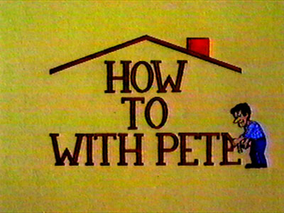
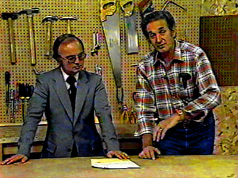
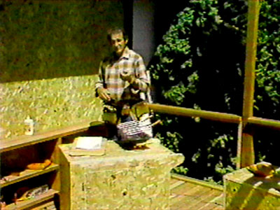
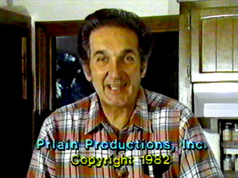
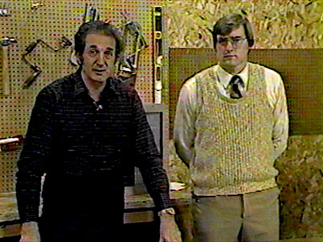

|
|
|
L O C A L P R O G R A M S |
How to... with Pete
December
18,
1976
-
December
1,
1984

Home improvement program featuring Pete Prlain, sponsored by Portland General Electric.




| How to... with Pete BROADCAST HISTORY |
| DEC
1976
-
APR
1977+:
SAT
8:30AM-9:00AM ? - DEC 1984: SAT 8:30AM-9:00AM |


This page last updated on August 17, 2025
|
Yesterday's KPTV Website design and content ©2003-2025 by Ron Dunevant, LLC unless otherwise noted. |